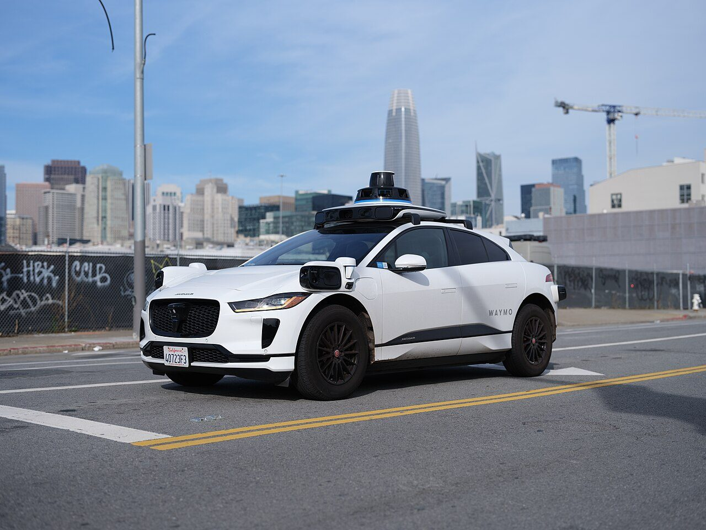
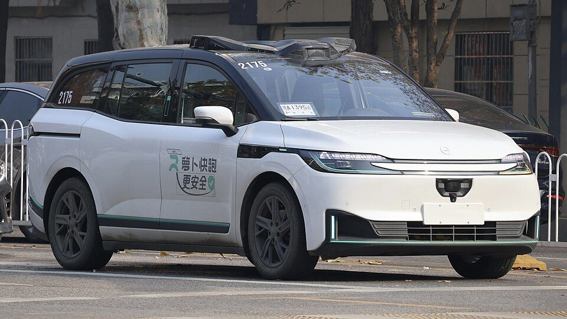
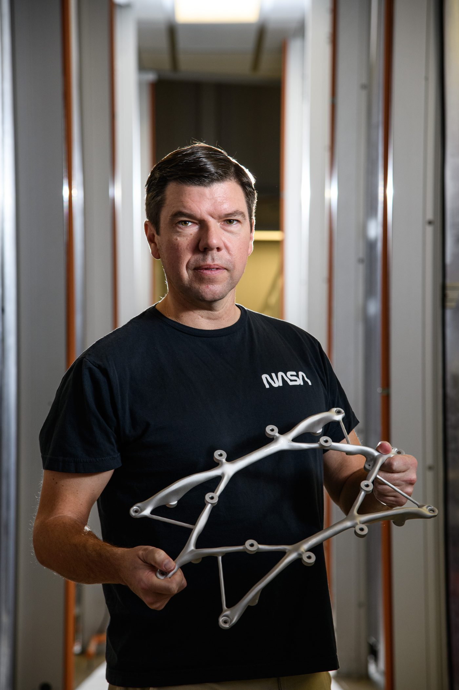
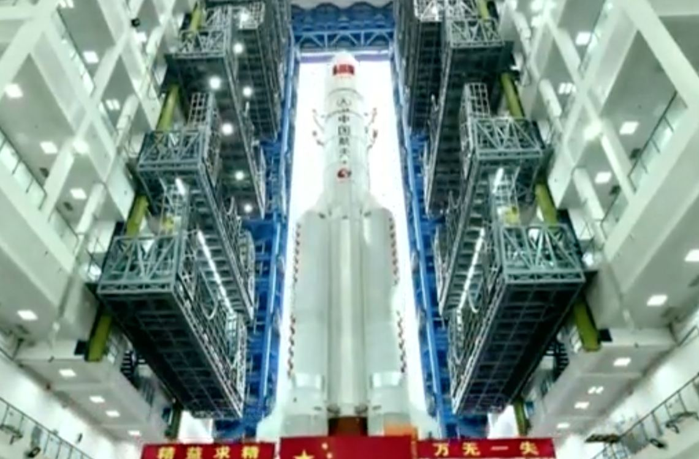
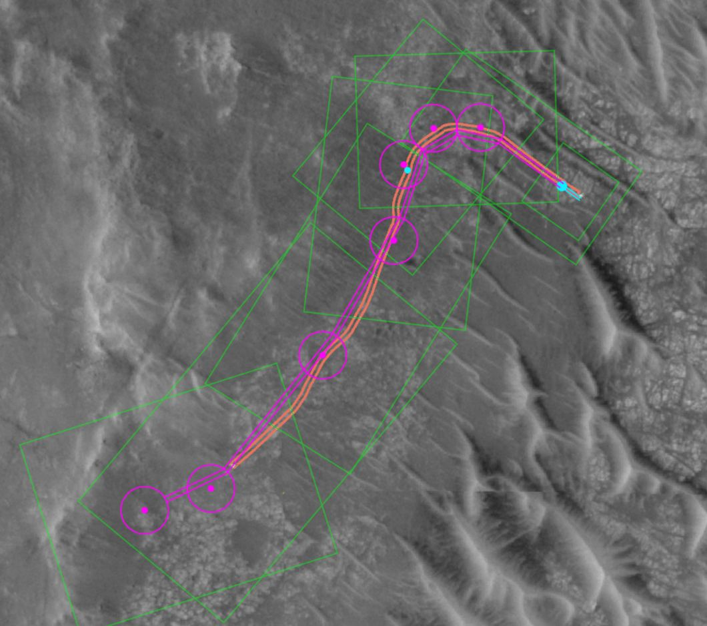
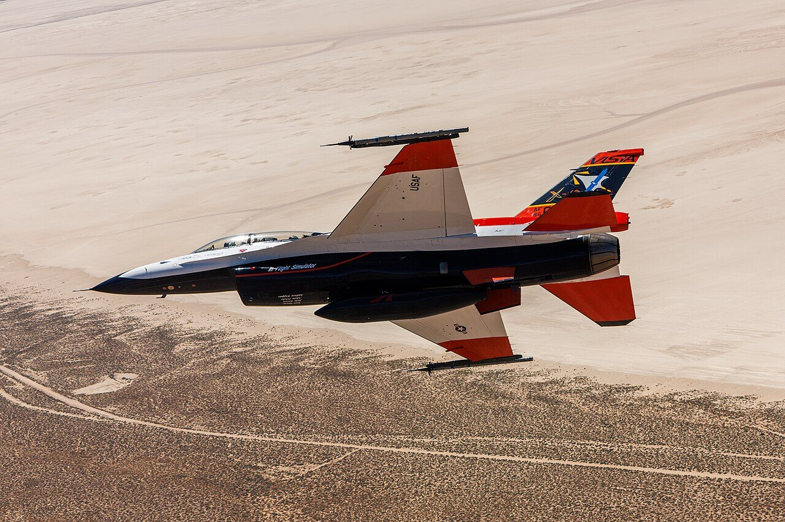

2026，
AI 到底有什么用
不讲原理，只讲用处。把这一轮 AI 归纳成六种用处，每一种都配上真实的案例和数据，再用一个专题细看航天。看完之后，能用几句话向别人讲清楚 AI 有什么用，也知道它还做不到什么。
现在的 AI，是一个听得懂人话、会看会写、还能自己动手的助手
它从海量的书籍、文章和代码中学习过。你用平常说话的方式交代事情，它能读文件、写材料、看图片、听语音、算数据，越来越多地能独立把一件事做完。三年时间，它从新鲜玩意变成了十亿人每周都用的工具。
每周使用 ChatGPT 的人数（2026 年 8 月）
生成式 AI 用户，普及率超过一半（CNNIC）
普及到 53% 的人口，比电脑和互联网都快
它进步得太快：能独立干的活，每 7 个月翻一番
衡量 AI 的一把直观的尺子：一件事交给人类专业人员要干多久，AI 能不能独立做完。2019 年只能做几秒钟的事，2026 年已经能做完人要干约 17 小时的事。同时，用它的价格两年降到了原来的 1/200。
"一半把握"指成功率约 50%；虚线为 METR 更新后的测量方法，与实线不完全可比。
达到 GPT-4 水平的使用价格，2023 年 3 月到 2025 年 2 月的降幅
"人类最后的考试"由各领域专家专挑 AI 答不出的题，AI 的最高分两年内从约 5% 升到约 55%
打个比方三年前它像一个只能跑跑腿的实习生，现在像一个能独立干两天活的熟手，而且还在快速成长。
AI 的用处，归纳起来就是六种
不管是医院、航空公司、政府还是实验室，AI 发挥作用的方式离不开这六种。点击卡片可以直接跳到对应的页面。
读得快、写得快：几天的案头活，几分钟出初稿
读文件、归纳意见、起草材料、审合同，这类以文字为主的工作，是 AI 最成熟、用得最广的地方。
花费 240 英镑，专家抽查核验用了 22 小时。AI 归类的一致性高于两个人类专家之间的一致性。
定制化公文从 5 天缩到几分钟，群众诉求分派准确率从 70% 升到 95%。每个"数智员工"都配有人类"监护人"。
过去要 6 人团队做两周，现在 AI 几分钟起草完 95% 的内容，剩下的由人完善。
约 150 万个汉字一次读完，读完后可以提问、对比、找矛盾。阿里的长文本模型能读 1.5 万页。
打个比方相当于每个人身边多了一个读得极快、随叫随到的秘书。初稿它来写，拍板签字的还是人。
眼睛尖：当第二双眼睛，查出人容易漏掉的
CT 片、钼靶片、发动机叶片、电网巡检照片，量大、细节小、看久了容易疲劳。AI 不知疲倦，专门盯人容易漏掉的地方。
一次胃痛检查，AI 在普通 CT 里发现了早期胰腺癌
66 岁的张先生因胃痛就诊，CT 报告没有提示胰腺问题。AI 在后台读片时报警，医院打电话召回复查，确诊早期胰腺癌，手术后已康复。
AI 读过的 CT
查出胰腺癌
处于早期
原报告未提示
检查时间减半，准确率同时提高。
已在东航所有分子公司应用，上传孔探录像即可自动出报告。
一次全域巡视的人工核查要 300 小时，AI 半天完成。
打个比方就像给每位医生、每位检查员配了一个永远不累的助手，专门找细节。它负责提醒，判断仍由人来做。
算得快、看得远：仿真从小时到秒，坏之前就换掉
过去要靠超级计算机算几个小时的仿真和预报，AI 几秒钟给出结果；过去零件坏了再修，现在根据数据提前判断哪个零件快坏了。
用 AI 分析飞机传感器数据，预测零件故障（成功率超过 95%），在夜间例行检修时提前更换。这 8 年的下降是整个预测性维护项目的成果，AI 是其中的关键部分。
大飞机设计需要约千万次流体仿真。与华为合作的工业级流体仿真大模型，把单次仿真缩短到原来的 1/25，误差在万分之一量级。
盘古比传统数值预报快 1 万倍以上；欧洲中心的 AI 预报已正式业务运行，能耗降至约千分之一。
省级日前负荷预测，在浙江、江苏等地验证。
2023 年省下的燃油，减少约 1.2 万吨二氧化碳；是否采用由签派员决定。
打个比方过去要算一整夜的，现在喝口茶就算完；过去是"坏了再修"，现在是"快坏了就换"。
让人人有专家：新手变熟手，好医生、好老师装进手机
AI 把顶尖专家的经验变成人人可用的能力。受益最大的往往不是专家本人，而是经验少的新人，以及原本接触不到专家的普通人。
AI 把资深员工的经验"传"给了新人。另一项哈佛与波士顿咨询公司对 758 名顾问的实验中，用 AI 的人速度快 25%，质量也更高。
对比对象是全科医生，不是专科专家团队。每周有约 2.3 亿人用 ChatGPT 咨询健康问题。
效果超过了约 80% 的发展中国家教育项目。
延迟约 2 秒。苹果耳机配合手机也能实时翻译中文、英语、日语等 9 种语言。
打个比方以前只有少数人请得起私人医生、家教和翻译，现在每个人的手机里都有一个，而且水平不低。
自己动手干活：从"你问它答"，到"交代任务，它去办"
这是 2025 到 2026 年最大的变化。AI 不再只是回答问题，而是能接手一整件事：写完一个软件、开着车把乘客送到目的地、规划火星车的路线。
OpenAI 的 GDPval 测试，由平均从业 14 年的专业人士出题、盲评。AI 速度是专家的 11 倍以上，成本不到 1%。
亚马逊用 AI 自动升级数万个内部系统，相当于省下 4,500 多年的开发工作量（企业自估）。

无人出租车付费订单，覆盖美国 15 个城市，累计无人驾驶 2.7 亿英里。

累计订单（2026 年 4 月），已在阿布扎比开展全无人商业运营。
福田区 70 名 AI 数智员工覆盖 240 个政务场景；2025 年 12 月，NASA 工程师首次让 AI 规划毅力号火星车的行驶路线并写出指令，经仿真校验后执行，两次共行驶约 456 米。
打个比方以前它是一把好用的工具，现在更像一个新招的员工：交代清楚任务，它能自己干完，但关键环节要有人检查。
加速科学发现：AI 帮科学家拿下了诺贝尔奖
在生物、数学、材料、医药这些最难的领域，AI 已经做出了人类几十年没做到的成果，而且被学术界正式承认。
解决了 50 年的难题。用实验方法逐个测定要数亿年，现在 190 个国家的 400 万研究者在用。
Google 的 AI 获国际数学奥林匹克金牌水平；2026 年 OpenAI 的模型推翻了数学家 Erdős 1946 年的猜想，菲尔兹奖得主称之为里程碑。
新晶体结构，相当于人类约 800 年的知识积累；其中 736 种已被实验室实际合成。
治疗肺纤维化的二期临床，12 周后肺活量平均增加 98.4 毫升，安慰剂组下降 20.3 毫升。
打个比方科学家的"显微镜"换代了：AI 负责在海量可能性里快速筛出最有希望的方向，科学家负责验证和判断。
从图纸到深空，AI 已经进了航天的每一个环节
但"进了"不等于"在用"。把 38 个公开案例按环节和落地程度排开：最成熟的是在轨和深空的自主运行，设计制造多数还在试验，大模型上天刚刚起步。
打个比方AI 在航天里像一批刚入职的新人：在"看、算、躲"这类规则清楚的岗位上已经独当一面；设计和制造的岗位还在试用期，每一步都有老师傅把关。
怎么读这个专题：按"地面研制 → 在轨应用 → 深空与科学"的顺序走，最后看航空国防。每个环节两页：先看"案例"，再看"原理"，原理页的卡片可以点开看做法、数字和局限。专题最后一页总结 AI 在航天里的好处和难点。页面顶部的路线条随时可以跳转。
设计：人定目标，算法几分钟出方案
发动机、结构件、喷管，过去要"画图、仿真、改图"反复几个月。现在工程师给出推力、重量、材料这些要求，算法自动生成方案并估算性能，人负责挑选和试车验证。
AI 先从大量仿真结果里学会规律，之后每个新方案几秒钟就能估出性能，中位误差约 5%。工程师一天之内能比较成千上万个方案，再把最好的几个交给传统仿真精算。

1–2 小时出设计，应力集中约降到原来的 1/10，已用于在研的探测任务。
2025 年 12 月，两台 20 千牛甲烷发动机试车成功，燃烧效率超过 93%。这套软件是按工程规则编写的计算模型，不是大模型。
2026 年发布的"Prime一行"，发布方称计算效率提升约千倍，已完成冷态、热态试验闭环。
打个比方过去是工程师一笔一笔画图再送去算；现在像给 AI 下一张"任务书"，它一口气交回几十个方案，工程师当评委。
同叫"AI 设计"，背后是四种不同的路子
共同点是把"画图、仿真、改图"这个要转几十圈的循环交给电脑高速地转。人负责三件事：定目标、挑结果、做试验。
- 定目标推力、载荷、安装点、哪里不许有材料
- 备"教材"或"规则"先跑几千次精确仿真，或把专家经验写成代码
- 批量出方案几分钟到几小时，生成成百上千个
- 快速估算、筛选每个方案几秒钟估出性能
- 审形状、精算工程师看方案，传统仿真和有限元复核
- 制造、试车3D 打印或数控铣，热试车验证
代理模型：先学再猜Surrogate Model · 物理 AI先用几千次精确仿真当"教材"，AI 学会"什么形状对应什么气流"，以后几秒钟就能估出新方案的性能。案例 · 诺格推力器喷管
怎么做
- 先用风洞冷流实验数据校准流体仿真软件（CFD），确保"教材"本身是准的。
- 在长度、面积比、喉部半径、室压 4 个参数上均匀撒点，每个点算一次高精度仿真，共约 2,000 次。
- 用 NVIDIA 的神经算子模型（DoMINO）学习，九成数据训练、一成留作检验。
- 部署在一块普通显卡上：工程师改一下形状，2–5 秒看到流场。
关键数字
- 约 2,000 次精确仿真当教材
- 2–5 秒一次估算，原来要几小时
- 5.2%中位误差，最好的 1.6%
- 0 件截至 2026 年 3 月尚无实物
只在"学过"的参数范围内可靠，超出范围准不准没有交代；发布方自己称之为概念验证。数字均为企业自述。
来源：Luminary Cloud 2025-10 · NVIDIA DoMINO 文档 · National Defense 2026-03
生成式设计：按约束"长"出来Generative Design · 拓扑优化工程师只画出"哪里要装螺栓、要扛多大力、哪里不能挡光路"，软件自动长出最省料的骨头状结构。案例 · NASA 戈达德结构件
怎么做
- 画出必须保留的安装面，以及光路、装配时手要伸进去的禁区。
- 输入载荷和 NASA 标准（例如螺栓孔离边缘至少 1.5 倍孔径）。
- 软件（Autodesk Fusion 360）约每分钟迭代一次，同时做受力分析，1–2 小时出方案；人工设计要 1–2 周迭代一次。
- 工程师审形状。设计者原话："算法需要人眼"，否则有时会做得太薄。
- 按 NASA 流程做有限元精算，再交给供应商五轴数控铣或 3D 打印。
关键数字
- 2 天 → 1 小时两名专家 vs AI（望远镜支架）
- <48 小时从需求到铣好的金属件
- 60+ 项已有的应用
- 10 倍+开发时间和成本降低
只适用于金属、塑料这类各向同性材料，复合材料不行；目前主要做中小型支架。形状像"外星骨头"，一些工程师看着不放心。这是传统优化算法，不是大模型。
来源：NASA 2023-02 · NASA 演化结构件报告 · NASA 播客 2022-09 · DEVELOP3D 2025-02
计算工程：把专家经验写成程序Computational Engineering不让 AI"学"，而是把物理公式、设计规则、制造约束全写成代码；输入推力，程序直接算出能打印的发动机。案例 · LEAP 71 发动机
怎么做
- 工程师给出规格：推力、推进剂、室压。
- 软件 Noyron 按写好的规则算出几何形状、制造文件和性能预测。同样的输入一定得到同样的输出。
- 用铜铬锆高温合金整体 3D 打印燃烧室和喷管。
- 热试车，试车数据再用来修正规则。
关键数字
- <3 周两台 20 千牛甲烷发动机，从规格到点火
- 93%+燃烧效率（钟形喷管）
- 每 4 周近 18 个月平均热试一台新发动机
- 1 次塞式喷管因启动问题只点了一次火
每一类零件的规则都要专家逐条写进程序，换新品类成本高；软件闭源。数字为企业自述。
智能体：把一串工具自动串起来AI Agent设计、仿真、优化、出试验方案、回收试验数据，原来每一步换一拨人；现在由一个 AI 程序自动调度，人只提需求、看试车结果。案例 ·"Prime一行"
怎么做
- 按需求自动生成设计，做参数化建模。
- 调用燃烧仿真平台 DeepFlame 等，把燃烧、流动、结构放在一起算。
- 多目标优化，在推力、重量、冷却之间权衡，筛出候选方案。
- 生成试验方案，金属 3D 打印，做冷态和热态试验。
- 试验误差回传，进入下一轮。
关键数字
- 约 2 周从构想到实物验证
- 约千倍计算效率提升（比较基准未公开）
- 2.5 吨推力的发动机正在试制
除 DeepFlame 外，各模块用了什么模型和软件都没有公开；信息主要来自发布方和融资新闻稿，不同报道对合作单位的说法也不一致。
分清楚新闻里都叫"AI 设计"，但 NASA 用的是拓扑优化，LEAP 71 是写好规则的程序，都不是聊天用的大模型。真正靠"学"的是代理模型，所以它也最需要用实验去验证。
制造测试：AI 先上岗当"质检员"和"判读员"
焊缝射线图像、零件缺陷、试验遥测曲线，量大、标准明确、看久了容易漏，是 AI 在航天工厂里最先落地的地方。
AI 判读火箭焊缝的射线图像
贮箱焊缝要逐段拍射线图像（相当于给焊缝拍 X 光片），再由检验员逐张判读，每年要审 25 万张以上。AI 用 2014 年以来积累的 30 多万张图像训练后，识别缺陷的准确率提高到 90% 以上，已在长征四号丙、长征五号、长征六号的产品上做了双盲测试（AI 和人分别判读、互不知情，再对答案）。
训练用的射线图像
缺陷识别准确率

SpaceX 火箭回收靠的不是 AI。猎鹰 9 号着陆时用的是箭上实时求解的最优化算法，属于传统控制方法。不是所有"自动"都是 AI。
主要靠十几年的数据贯通，每发火箭都有完整的"电子档案"。工厂称之为 AI 赋能，详见下一页。
2026 年 2 月发布，对接 108 个场景、联合开发 75 个应用，用于卫星判读、故障归零分析、在轨运维等。
用机器学习判读长征六号改火箭伺服、惯性器件的测试数据，替代人工逐条比对曲线。
打个比方AI 像一个看过几十万张片子的老检验员，先把可疑的挑出来；放行签字仍然由人负责。
看图像、看曲线、查经验：三类活，三种做法
工厂里的 AI 分三类：在图像里找缺陷，用深度学习视觉；在遥测曲线里找异常，用仿真比对加机器学习；在历年故障经验里找答案，用行业大模型。三类的前提相同，都要先有干净、连通的数据。
- 拍图射线源伸进舱体、成像板贴在舱外，数字图像自动上传
- 有没有缺陷分类网络先把正常的图筛掉
- 缺陷在哪目标检测网络框出位置
- 是什么、几级判断气孔、夹渣、未焊透，对照标准样图评级
- 出结果专利称可"部分或全部代替人工评片"，实际怎么分工未公开
深度学习视觉检测CNN · Object Detection用几十万张标注过的历史图像教会电脑"什么样算缺陷"，判读时分三步：有没有、在哪、是什么。案例 · 八院 800 所焊缝射线图像
怎么做
2014 年起，焊缝检测从胶片改为数字成像板直接出图，积累了 30 多万张数字射线图像，成为训练数据。专利中的三段式方案是：卷积神经网络（VGG、ResNet 一类）判断有无缺陷，目标检测网络（YOLO、Faster R-CNN 一类）框出位置，再用分类网络判定类型和等级。上线前在长征四号丙、长征五号、长征六号上做了人机双盲对比。
关键数字
- 30 万张+训练用的历史图像
- 90%+双盲测试准确率
- 28.6 → 14.3 秒每张判读用时（500 张抽样，人 vs 机）
- 25 万 → 50 万张每年要审的量（"十三五"到"十四五"预计）
专利是方案描述，不等于实际部署的系统；90% 的统计口径（按张还是按缺陷）没有说明；人机具体怎么分工，公开资料没有写。
遥测智能判读镜像仿真 + Machine Learning先用仿真算出"正常应该是什么样"的曲线，再和实测逐点比；机器学习从历史数据里学参数的变化规律，补上规则覆盖不到的异常。案例 · 八院控制所长征六号改
怎么做
- 读入本发次火箭的装订数据。
- "镜像仿真"复算出一条标准曲线，与实测数据精确比对。这一步是规则方法，不是机器学习。
- 机器学习从历次测试遥测中学习参数变化规律，提高判读覆盖面。
- 判读规则和判读参数分开管理，换发次时可以快速更新标准；自动生成报告。
关键数字
- 事后 → 实时伺服、惯组数据从事后分析变为实时判读
- 90%测试人员工作量降低（含自动化）
- 80%在线验收时间节省（含自动化）
用了什么算法、学了多少发次的数据、准确率多少，都没有公开；上面的数字大部分来自测试自动化，不全是机器学习的功劳。
行业大模型 + 知识库Domain LLM · 类似 RAG 检索增强把历年故障归零报告、故障模式清单整理入库；工程师描述问题，系统翻出相似的历史案例和处理建议。案例 ·"天玄"在 808 所
怎么做
- "天玄"1.0 是一组模型：开物（科学计算）、成务（任务规划、调用工具）、千河（遥感图文），加上行业数据集万卷。
- 808 所先定填报规范，各厂所整理归零报告、故障模式清单、技术风险清单，经专家评审。
- 清洗、校验后结构化入库，模型部署在本所自建的算力集群上，不连公网。
- 输入问题描述，平台匹配历史归零案例，推荐问题定位、原因和措施，由设计师和质量人员采纳或修改。
关键数字
- 108 个对接的场景
- 45 家初步应用的单位
- 2026-04808 所平台正式上线
- −50%装配缺陷检测时间（808 所，视觉检测）
底座模型和参数规模未公开。测评中出现过坐标转换正负号搞反、分不清"1.9""1.11"是日期还是数值这类错误，所以结论必须由人核对。
先打通数据，AI 才有米下锅Digital Thread · 数据贯通"质量追溯从几天到 5 分钟"主要靠十几年的数字化：每发火箭都有完整的过程数据包，跨系统一查到底。案例 · 上海航天设备制造总厂
怎么做
- 2009 年起，逐步把物资、计划、供应链数字化。
- 2018 年生产管理系统上线，采集设备和工序数据。
- 每发火箭交付时附带完整数据包。
- 原材料出了问题，系统直接查到用在哪一发、哪个部段、在哪个仓库。
关键数字
- 几天 → 5 分钟质量问题追溯
- +40%智能装备生产效率
- 60%+AI 应用渗透率（企业说法）
报道称"AI 赋能"，但描述的机制都是跨系统数据贯通，没有提到具体的 AI 算法。工厂下一步打算用多模态大模型做质检。
来源：上观新闻 2026-04
分清楚工厂里很多"智能化"成果，有不少功劳属于数字化和自动化。AI 要发挥作用，前提是数据已经采得到、存得下、连得通。
在轨：上万颗卫星自己躲碰撞，开始"边拍边想"
卫星多到人盯不过来，躲碰撞、查故障只能交给自动系统。另一个新方向是把 AI 芯片和模型送上卫星，在天上直接处理数据，只把结论传回地面。
SpaceX 称之为"自主避碰系统"。其间调低过触发阈值，增长不全是因为轨道变挤。
处理时间从几小时缩短到几秒，识别准确率 99%。星座上已部署 10 个 AI 模型，最大的两个有 80 亿参数，单星算力每秒 744 万亿次。
1.0 版已上注在轨星座稳定运行，2.0 版于 2026 年 9 月发布。
计划 2028 年内发射首批 100 颗算力卫星。
全程无人干预，2025 年完成 8 次飞行试验，避免拍回一堆被云挡住的废片。
2024 年有效预警 200 余次（企业数据）。
打个比方过去卫星是"只拍不想"的相机，拍完全部传回地面；现在开始像派到前线的侦察兵，自己判断，只发回结论。
卫星上的"自主"分两种：按规则躲，带 AI 芯片算
Starlink 自动避碰靠的是精确计算加规则，SpaceX 并不称之为 AI。另一类是把 AI 模型送上卫星，在天上直接处理数据。这一类受太空芯片限制最大：芯片要扛得住辐射，就得牺牲性能。
- 自己定轨每颗卫星用导航信号算出自己未来几天在哪，约每小时公开一次
- 汇总预警地面汇总美军雷达和各方的碰撞预警，发给卫星
- 星上重算卫星用自己更准的位置预测，重算相撞概率
- 自动让开超过千万分之三，在最近交会前 12 小时内自己点火
- 人工兜底风险压不下来或卫星不能机动，交给值班操作员
自主避碰Collision Avoidance · 非 AI地面把"别的东西会在哪"发上卫星，卫星自己算撞上的概率，超过门槛就自己挪开。案例 · SpaceX Starlink
怎么做
- 预警来源：美军太空监视雷达的筛查结果、其他运营商上传的星历、SpaceX 自建的光学观测。
- 地面汇总每个来源的最新预警，上注给卫星。
- 卫星用自己的导航定轨结果重算概率，自动新增、修改或取消机动，同时把太阳翼放平以缩小迎面面积。
- 用氩气作工质的电推进器（霍尔推力器）点火。
关键数字
- 千万分之三触发机动的相撞概率，行业常用万分之一
- 1,000+ 次官方称每天的避碰机动
- 约 46 次每颗二代星每年机动次数
每次躲完仍有残余风险，几十万次累积起来不可忽略。高层大气受太阳活动影响难以预测，卫星常在"躲幽灵"，消耗燃料、缩短寿命。
在轨计算星座Space-based Computing把数据中心级的计算机装上卫星，卫星之间用激光连成网，数据在天上算完，只把结论传回地面。案例 · 之江实验室"三体计算星座"
怎么做
- 过去是"天感地算"：卫星只管拍，原始数据全部传回地面处理，受地面站和带宽限制。
- 现在"天数天算"：模型在地面训练好，通过测控链路"上注"到星上计算机，可以在轨更新。
- 以伽马暴为例：探测器持续采集，星上 80 亿参数的模型判断是不是伽马暴、属于哪类，只传回结论。
- 国内另有航天科技集团"天玄·千河"遥感模型，1.0 版已上注在轨星座运行。
关键数字
- 744 TOPS单星最高算力
- 100 Gbps星间激光链路最高速率
- <1/10"天感地算"能传回的有效数据（项目方说法）
- 16 颗 · 25 个2026 年 9 月在轨卫星和模型数
难点有两个。一是对准：激光终端口径只有十几毫米，要在相距 1,500 公里、相对速度每秒 7 公里的情况下秒级锁定。二是可靠性：高能粒子会让芯片存储位翻转，甚至引发短路。散热和供电方案没有公开。
来源：中国青年报 2025-05 · 新华网 2026-02 · 杭州网 2025-05 · 新华网 2026-09 · 航天科技集团 2026-09
先看云，再决定拍哪里Dynamic Targeting卫星先"抬头"看前方约 500 公里的云，几秒内算出哪里晴朗，再低头只拍没被云挡住的那一条。案例 · NASA JPL CogniSAT-6
怎么做
- 卫星前倾 40–50°，用唯一的相机拍前方图像。
- 星上低功耗 AI 芯片（Intel Myriad X）运行卷积神经网络，逐像素判断是不是云。
- 6 秒内选出云最少的条带；地面事先已算好每个条带对应的侧摆角度。
- 卫星回转，按选中的角度拍摄。决策过程中没有人参与。
关键数字
- 最多 2/3光学卫星被云挡住的时间
- 6 秒算法必须完成的时限
- 60–90 秒从看到拍的全过程
- 8 次2025 年的飞行试验
斜着看的角度太大，各波段图像对不齐，只能用灰度图判断；追踪风暴、发现火点等功能还没有在轨结果。
星上丢掉废片On-board Inference · 商用芯片卫星在天上判断"这张图是不是被云挡了"，挡了就不传，把宝贵的下行带宽留给有用的图。案例 · 欧空局 Φsat-1、Φsat-2
怎么做
- 相机是新的，没有现成数据，就用其他卫星的数据合成训练集。
- 用一块商用视觉芯片（Myriad 2）跑神经网络，上天前在欧洲核子研究中心连续辐照 36 小时，未经改动就通过了。
- 逐像素判断有云无云，只下传可用的数据。
关键数字
- 2020首次在轨用 AI 芯片处理对地观测图像
- 36 小时上天前的辐照试验
- 6 个Φsat-2 的星上应用：云、街道、船只、山火等
常见的"省 30% 带宽"出自芯片厂商的设计思路，不是欧空局公布的在轨实测值；在轨判断的准确率没有公开。
来源：欧空局 Φsat-2 · Intel 2020-10
遥测异常检测LSTM · Anomaly Detection记住卫星正常时成千上万个参数"该长什么样"，实际值一偏离规律就预警，哪怕还没越过报警红线。案例 · 西安寰宇卫星测控；同类方法 NASA JPL
怎么做
寰宇公司公开的内容是：用深度学习分析轨道、姿态、电源、热控等数千项参数，识别异常趋势，例如电源电压长期缓慢下降时提前预判电池故障。具体算法没有公开。
NASA JPL 公开了同类方法：每个遥测通道训练一个"会记时间规律"的神经网络（LSTM），预测下一刻的值；实际值和预测值差得多了就报警，门槛根据近期误差自动调整；运控工程师复核告警。
关键数字
- 200 余次寰宇 2024 年有效预警（企业数据）
- 98%寰宇称的预警准确度
- 87.5% / 80%JPL 方法的精确率 / 召回率
- 700+JPL 试点实时监测的通道数
JPL 团队指出，误报太多是这类方法进入业务运行的最大障碍；寰宇的"准确度"统计口径没有说明。
太空芯片的取舍Radiation-hardened vs COTS太空里的高能粒子会让芯片"记错数"甚至烧坏。传统航天芯片用大量性能换可靠，现在开始把商用 AI 芯片拿去打粒子束，看它扛不扛得住。背景 · 所有星上 AI 的硬约束
现状
- 毅力号火星车的主处理器 RAD750 最高只有 200 MHz，NASA 称现役航天计算机是"近 30 年前开发的"。
- NASA 新一代抗辐射处理器 HPSC 设计指标是 100 倍以上，2026 年 5 月初步测试约为现役芯片的 500 倍。
- Google 用质子束测试自家 AI 芯片：内存在约 3 倍于 5 年任务剂量时才开始异常，主要风险是"算错了却不报错"。
关键数字
- 200 MHz毅力号主处理器
- 约 500 倍NASA 新芯片初测
- 2 TOPS新芯片的 AI 算力（对比三体单星 744）
- 1/300 万Google 芯片每次推理出静默错误的概率
抗辐射芯片可靠但慢，商用芯片快但需要靠冗余、纠错和屏蔽兜底。Google 的结果是厂商自己的地面测试，商用 GPU 上天的辐照数据大多没有公开。
来源：NASA 毅力号部件 · NASA 2022-08 · NASA 2026-05 · Microchip · Google Suncatcher 论文
分清楚"自主"不等于"AI"。Starlink 每天上千次避碰靠的是精确计算和明确规则，它可预测、可审查。真正的星上 AI 目前主要做"筛数据"，例如判云、判伽马暴，出错的代价是少传或多传一张图，而不是撞星。
看地球：卫星图从"专家逐张判读"到"AI 先过一遍"
卫星每天拍回的图像，人工根本看不完。遥感大模型先把大范围影像过一遍，认出农田、建筑、水体和变化，专家只复核可疑的地方。
数字来自发布方。识别率从七成升到九成，意味着人工复核量大幅减少，但仍需要人工确认。
存储空间只要原来的 1/16，已有 50 多家机构使用。
用于洪水、火烧迹地、作物制图，任何人都能下载使用（IBM 估计）。
百亿参数，精度平均提升 4%–10%，在应急、国土、海洋、住建部门部署试运行。
雷达能穿云透雾，AI 用于加快影像解析。
打个比方AI 像一个不睡觉的初审员：先把全国的卫星图过一遍，圈出哪里变了；最终认定由专家来做。
遥感大模型：先用海量图自学看图，再用少量标注教具体任务
过去每做一种专题图，比如水体、耕地、火烧迹地，都要标几万个样本、从头训练一个专用模型。基础模型先在海量没标注的卫星图上练出通用的"看图能力"，之后每个新任务只需要几十到几百个标注样本。
- 收集海量影像光学、雷达、多年时序，不需要人工标注
- 自学看图遮住大部分图块让模型猜，练出通用本领
- 少量标注专家为具体任务标几十到几百个样本
- 微调教会它认洪水、作物、地类
- 出图复核结果供参考，认定由专家做
做"填空题"自学Masked Autoencoder · 自监督把卫星图切成小块，遮住大部分让模型猜回来。猜多了，它就学会了地表长什么样。案例 · NASA × IBM Prithvi
怎么做
- 从 NASA 统一处理过的 Landsat、哨兵二号数据里取样，避开云，按气候区均衡抽样。
- 用"遮住再还原"的方式预训练，不需要任何人工标注。
- 模型权重免费开源，任何人都能下载。
- 用少量标注微调到洪水、火烧迹地、作物分类等任务。
关键数字
- 1 TB+1.0 版的预训练数据
- 540 → 135 张火烧迹地任务的标注量，效果相当
- 420 万2.0 版的全球时序样本
- 3 亿 / 6 亿2.0 版两个规模的参数量
1.0 版只用了美国本土的数据；分辨率 30 米，看不清单栋建筑。
给每块地一张"数字身份证"Embedding · 嵌入把同一块 10 米见方的土地一年里所有的光学、雷达、激光、气候观测，压缩成 64 个数字。以后要做任何地图，只需在这串数字上训练一个简单的分类器。案例 · Google DeepMind AlphaEarth
怎么做
- 汇集 10 种数据：哨兵一号和二号、Landsat、日本 PALSAR-2 雷达、GEDI 激光、地形、气候、重力，加上维基百科文本和物种记录。
- 用一个"看视频"式的时空模型学习这些数据之间的关系。
- 每年生成一版覆盖全球陆地的嵌入图层，放在 Google Earth Engine 上。
- 用户提供少量标注，训练自己的分类器。
关键数字
- 64 字节每个 10 米像元的存储量
- 30 亿+训练用的观测
- −23.9%15 项评测中误差比次优方法平均低
- 16 倍存储比同类 AI 系统少
这 64 个数字人看不懂，要靠下游分类器解读；数据按年发布，看不出一年之内的变化。
换一种省算力的结构RS-vHeat · 热传导算子把图中信息的传播当成热量在材料里扩散来计算，比主流的"注意力"结构省算力，训练所需的显卡更少。案例 · 中科院空天院"空天·灵眸"3.0
怎么做
- 与鹏城实验室合作，以"热传导"结构作为模型的核心。
- 把光学和雷达图像映射到同一个空间，让同一地点的两种图像在模型里"对得上"。
- 用 4 亿张多模态样本，在 512 张国产昇腾显卡上训练。
关键数字
- 百亿参数，首次超过百亿
- 2.4 倍+计算吞吐量，比经典结构
- 4%–10%23 个评测上的平均精度提升
- 300+ → 1/3训练 1,000 万张样本所需显卡（受访者举例）
公开论文里的模型规模比产品小得多；红外、高光谱等数据怎么融合没有公开。
来源：光明日报 2024-10 · 鹏城实验室 2024-09 · RS-vHeat 论文
通用大模型 + 行业知识Qwen · LoRA · 知识库在通义千问的底座上，灌入自然资源行业的文件、术语和专家经验，既能回答政策问题，也能辅助识别卫星图里的地类。案例 · 自然资源部信息中心 × 阿里云"后土"
怎么做
- 70 多万份政策和基础知识文档转成可检索的知识库。
- 加上知识图谱、术语定义、专家问答对。
- 只训练模型的一小部分参数（LoRA 微调），让它学会行业说法。
- 先用公开数据跑通，再部署到内网，因为数据涉密。
关键数字
- 960 万平方公里每年两次 1:5000 国土调查
- 70 万份+入库的文档
- 70% → 90%一级地类识别率
遥感识别部分的模型结构和训练样本没有公开；数字来自阿里云参与策划的刊物。模型给出的评估只作参考，执法认定仍由人负责。
雷达卫星：穿云透雾SAR · 合成孔径雷达雷达自己发射微波、接收回波，不靠阳光、能穿透云。卫星边飞边收，把一路的回波合成，等效成几公里长的大天线。案例 · 航天宏图"女娲星座"
怎么做
- 发射微波脉冲，接收地面回波。
- 把飞行途中的回波合成为高分辨率图像。
- 去除颗粒状的"斑点噪声"，校正山区的几何变形。
- AI 做目标检测、变化检测，人工判读核验。
关键数字
- 约 4,250 米C 波段要达到 10 米分辨率所需的等效天线长度
- 1 米女娲星座分辨率
- <1 小时从下指令到拿到数据
雷达图和照片很不一样：有斑点噪声，山体会"倒向"卫星；AI 研究大多集中在光学图像上，雷达缺少高质量的公开训练数据。女娲星座具体怎么用 AI 没有公开。
来源：NASA Earthdata · SAR 深度学习综述 · 新华社 2024-12
分清楚遥感 AI 的进步，主要是从"每个任务从头标几万张"变成了"一个底座、少量标注"。它出的是"初稿图"，进入执法、统计的数字仍要人工核实。
深空：离地球越远，越要自己拿主意
火星的信号单程最长约 20 分钟，遥控来不及。着陆、行驶、挑目标，深空探测器早就靠自主系统工作，AI 让这种"自主"越来越强。
毅力号每看一次路要处理 60 万个测量点，第一辆火星车索杰纳只有 20 个。2026 年 10 月累计行驶 45 公里，创地外行驶纪录。

两次分别行驶 210 米和 246 米。图中品红线是 AI 规划的路线，橙线是实际路线。指令发出前，先在"数字孪生"里核验了 50 多万个遥测变量。
天问一号自主完成进入、下降、着陆，距地面 100 米悬停，自己找平地、避开石块；嫦娥六号同样如此。官方称为"自主控制"。
2022 年撞击后，小行星绕转周期缩短 32 分钟，首次证明人类能改变小天体轨道。
下降时拍地面和星上地图比对，定位误差从 3.2 公里缩小到 40 米以内，再避开预先标出的危险区，安全着陆概率从 80%–85% 提高到 99%。
打个比方就像派一位司机去一个电话要几十分钟才接通的地方：路只能他自己看、自己开，地面只定目的地和规矩。
深空自主靠的是：看路、认地、挑石头、自己瞄准
深空自主由来已久：1999 年，"深空一号"上的软件就独立指挥了飞船 3 天。这些年的进步主要在"眼睛"和"算力"上，相机看得更细、算得更快；AI 也开始在地面帮人做规划。下面以火星车的一天为例。
- 地面定目标科学家选目的地，规划员在地图上标出沙地等禁行区
- 拍立体照片两台导航相机同时拍，算出前方地面高低
- 选路从一批候选路线里挑最快、车身又不磕碰的
- 边走边想车轮在转，下一段路已经在规划
- 到点自己挑石头不等地面指令，挑出最值得测的石头，用激光测成分
- 回传复盘第二天地面看结果，再定下一步
自主导航：自己看路、选路AutoNav · Stereo Vision一对相机算出前方地面的高低起伏，从候选路线里挑最快、又不会让车底磕碰的一条，而且边开边算。案例 · 毅力号
怎么做
- 左右两台导航相机同时拍照，用两张照片的视差算出距离，生成地面高度图。
- 按"到目标要多久 + 地面多崎岖"给所有候选路线排序。
- 从排第一的开始逐条做安全检查：按最坏情况估算每个车轮的高低，看车底会不会刮、车身会不会倾斜太大（近似间隙评估 ACE）。
- 车上有一台专门做视觉计算的计算机（含 FPGA 芯片），着陆时用于比对地图，落地后专职导航，所以能"边走边想"。
关键数字
- 120 米/小时最高速度，好奇号约 20 米
- 412 米单日最远
- 60 万个每看一次的测量点，第一辆火星车只有 20 个
- 0.5 米勇气号、机遇号每走这么远就要停下来想
只看得出地面的形状，看不出是不是软沙，沙地要靠人提前标出。走得越远位置误差越大，禁行区会被"放大"堵住通道，曾经只走 14 米就停车。逆光时相机会眩光，下午过半就得停。
来源：NASA 2026-10 · NASA 2021-07 · IEEE Spectrum 2026-10 · NASA JPL · ACE 论文
大模型在地面规划路线Vision-Language Model过去由驾驶员在卫星图上一个个点航点；这次交给 Claude 看图、标地形、写指令，人审核后再发上火星。案例 · NASA JPL × Anthropic
怎么做
- 工程师把多年的驾驶经验和数据整理好，交给 Claude。
- Claude 看轨道相机拍的高清照片和坡度图，认出基岩、沙纹、乱石区。
- 约 10 米一段拼出路线，自己检查、修改，用火星车的指令语言写出航点。
- 指令在地面的"数字孪生"火星车上预演，核验 50 万个以上遥测变量。
- 驾驶员审阅后只做了小改，把一处两侧有沙纹的窄通道分得更细，因为 Claude 没看到车上拍的照片。
关键数字
- 210 + 246 米2025 年 12 月的两次行驶
- 50 万+预演时核验的遥测变量
- ≤100 米人工规划时航点的一般间隔
只是两次演示，AI 在地面运行，不在车上。车上照常由自主导航实时避障。网上流传的"规划时间减半"是工程师的估计，不是实测。
来源：NASA 2026-01 · Anthropic
地形相对导航：着陆时"看地图认路"Terrain Relative Navigation下降时拍地面，和预先存在飞船里的地图做拼图比对，10 秒内算出自己在哪，再偏转飞向安全点。案例 · 毅力号着陆
怎么做
- 地面用轨道器约 30 厘米分辨率的照片做成两级地图，预先标出危险区。
- 约 4.2 公里高度开始拍照。先粗匹配：在 3 张照片里认出 15 个地标。
- 再精匹配：每张照片最多认 150 个地标，与惯性测量数据融合，得到位置和速度。
- 从预先标好的安全点里，选一个燃料够得着的，偏转飞过去。
关键数字
- 3.2 公里 → 40 米定位误差
- 10 秒完成一次定位
- 80%–85% → 99%安全着陆概率
- 5 米落点距它自己选定的点
只能避开地图上预先标出的危险，不是现场识别每块石头；依赖高质量的先验地图，到了没有高清地图的天体（如木卫二）就不够用。
来源：NASA 2022-09 · JPL 机器人组
自主选靶：自己挑石头AEGIS车到新地点后不等地面，在照片里圈出石头，按科学家给的"偏好表"排名，挑第一名用激光测成分。案例 · 机遇号 → 好奇号 → 毅力号
怎么做
- 科学家事先设定"目标画像"，例如偏好浅色基岩。
- 行驶后拍照，自动识别候选石头，剔除太远、太靠近车体或太阳方向的。
- 排名，选前一两个（毅力号升级后一次最多 5 个）。
- 立刻用激光打点分析，数据传回后由科学家判读。
关键数字
- 93%+选中科学家想要的石头类型，盲打约 24%
- 2010机遇号首次使用（当时只用来选拍照目标）
- 150–450 秒每次运行用时
好处是把"等地面回话"的空档用起来：午后到达新地点，照片还没传回地球，第二天车又要开走。局限是车上算力很小，"偏好表"要根据火星上的实际情况不断调整。
粗精接力避障GNC · 官方称"自主"先用光学相机"远看"选一片大致平坦的区域，再在 100 米高处悬停，用激光"近看"扫出三维地形，选定最终落点。案例 · 天问一号、嫦娥六号
怎么做（嫦娥六号）
- 地面用嫦娥二号 7 米分辨率影像和地形数据，预选坡度小的区域。
- 约 15 公里高度开始动力下降，相对速度从约每秒 1.6 公里降到零。
- 1.5 公里高度，光学成像敏感器粗避障，剔除大障碍。
- 100 米高度悬停，激光三维成像敏感器扫描地形，精避障选定落点。
- 缓速垂直下降，接近月面时关机，靠着陆腿缓冲。
关键数字
- 约 20 分钟天问一号着陆时地火单程通信时延
- 9 分钟天问一号从约 2 万公里时速减到零
- <20 厘米天问一号悬停时要避开的石块和坑
- 上千次地面试验（河北怀来、敦煌等地）
官方称"自主控制"，没有称之为 AI，避障识别用的具体算法未公开。月球背面地形更崎岖，光照和测控更容易被遮挡。
来源：中新网 2021-05 · 瞭望 2023-01 · 航天科技集团 2024-06 · 新华社 2024-06
光学自主制导：自己瞄准撞击SMART Nav最后 4 小时，飞船在照片里找亮点、算中心，认出两颗小行星里较小的那颗，每秒算一次"往哪推一下"，一路撞上去。案例 · NASA DART
怎么做
- 地面先把飞船送进目标通道，最后 4 小时交给星上算法。
- 在相机照片里找成团的亮点，算出每个亮点的中心。
- 两个亮点里较小的就是目标 Dimorphos，它直径约 160 米，撞击前约 1 小时才看得见。
- 预测目标位置，决定何时点火、推多少，约每秒一次；最后约 2.5 分钟停止调整，保证拍照清晰。
关键数字
- 约 6 公里/秒撞击速度
- 1.5 分钟地面一来一回的通信时延，来不及遥控
- 1–2 万次上天前做的末段仿真
- 25 倍实际效果超过最低成功标准
星上处理器的算力只相当于第一代 PlayStation 游戏机。早期仿真经常脱靶：小行星的阴影可能让一个目标看起来像两个亮点。推进器点火时传感器的反应，只有上天才能验证。
分清楚深空里用得最多的是经过几十年验证的"规则加规划"式自主，它们按事先写好的步骤算，行为可以预测。靠"学习"的大模型目前只在地面帮人做规划，还没有上到探测器去做决定。
空间科学：AI 帮科学家从海量数据里淘金
望远镜和探测器产生的数据，早已超出人工能处理的量。AI 负责初筛，科学家负责确认，有些发现因此提速了几十倍。
是此前同一纬度范围内识别数量的几十倍，还估算了约 1.9 万个撞击坑的年龄，帮助推算月球的演化历史。
NASA 2026 年公布的数字（2021 年论文为 301 颗）。升级版又从新数据里标出约 7,000 个候选，等待确认。
3 年里找到 51 颗脉冲星和 3 例快速射电暴（企业发布）。
满负荷时的数量，拍摄后 2 分钟内把告警推送给全球科学家。
能推演未来约 2 小时的太阳图像，并预报 24 小时内会不会出现强耀斑，评分高于对比模型。已开源。
打个比方过去天文学家像在沙滩上一粒一粒找金子，现在 AI 先筛出一小撮，科学家再逐个确认。
共同的套路：把信号变成图，机器初筛，人来确认
天文数据量大，真正有价值的信号又极少，最难的是已知样本太少，没多少现成的"答案"可以教 AI。各团队的办法各不相同：借用别处学到的本事、让 AI 自己出题自己练、只挑最值得人看的样本给人标。
- 原始数据光变曲线、射电信号、太阳图像，每天以 TB 计
- 预处理成"图"折叠、去噪、相减，把信号变成 AI 能看的图
- AI 打分给每个候选算"是真信号"的概率
- 只留极少数千万张图里筛出几百个候选
- 科学家确认人工复核，或用别的望远镜再观测
模仿专家的"复核员"Multi-branch CNN · 可解释不是去发现新行星，而是复核望远镜已经抓到的疑似信号。每一项检查交给网络的一个分支，就像专家逐项看诊断报告。案例 · NASA ExoMiner
怎么做
- 输入：行星挡住恒星时亮度下降的曲线（凌星），加上一份诊断报告。
- 每类诊断走一个网络分支：两次凌星深度是否一致、有没有次食、亮度中心是否偏移。这些检查专门用来揪出"双星冒充行星"。
- 输出"是行星"的概率，超过 0.99 才算验证。
- 把某个分支的输入盖住，看分数怎么变，就能说明它为什么这么判，专家据此复核。
关键数字
- 10 万+开普勒和 TESS 的候选信号
- 93.6%召回率（此前最好 76.3%），精度 99%
- 301 颗2021 年论文验证的数量（NASA 2026 年称 370 颗）
只能复核已有候选，还不能从原始数据里自己找信号；"验证"是统计意义上的，样本少的参数区间不可靠。
来源：ExoMiner 论文 · NASA 2026-01
迁移学习：借用别处学到的本事Transfer Learning先用识别日常照片练出的"看图能力"，在嫦娥一号低分辨率图上学会认坑，再不加任何新标注，直接用到嫦娥二号的高清图上。案例 · 吉林大学 × 国家天文台
怎么做
- 起点是国际上已有的目录：7,895 个已识别的坑、1,411 个已知年代的坑。
- 用在海量日常照片上预训练过的网络，在嫦娥一号 120 米分辨率的图上学认坑。
- 不加新标注，迁移到嫦娥二号 7 米分辨率的图上，认出更小的坑。
- 另一组网络结合形态和直径、深度、地层关系，判断坑的年代。
- 4 名中科院科学家抽查核验，并与 3 个人工数据库比对。
关键数字
- 1,411 → 18,996已知年代的坑，从起点到成果
- 4.49%新坑误报率，此前方法约 11%
- 约 85%–89%年代判断准确率
相邻地质年代容易混淆；最古老年代的样本极少，测试时只有 2 个。
样本太少时：半监督与主动学习Semi-supervised · Active Learning已知的脉冲星只有一百多个样本，不够教 AI。办法是让它也从大量没标注的数据里学，并只把最拿不准的样本挑给人看。案例 · FAST × 腾讯优图、复旦大学
怎么做
- 把射电信号按物理方法处理成几类"信号图"：随频率的延迟、随时间的变化等。
- 多种信号图对齐后一起交给视觉 AI 判断，排除手机、雷达等人造干扰。
- 半监督学习用上大量未标注的图；主动学习只把最拿不准的样本交给专家标注，再反过来训练。
- 留下极少量候选，由天文学家确认。
关键数字
- 约 3,000 万张一周的数据生成的信号图
- 1 年 → 3 天人工每秒看 1 张 vs AI
- 51 颗3 年找到的脉冲星（企业发布）
信号弱、干扰多、样本少；快速射电暴的样本更少。各方公布的数据量口径也不一致。
来源：InfoQ 采访复旦团队 · 复旦大学 2022-11 · 新浪财经 2024-11
差分成像 + 真假分类 + 分发Difference Imaging · Real/Bogus · Broker新照片减去同一片天区的历史照片，剩下的就是"变化"；小型神经网络剔除仪器造成的假信号，2 分钟内向全球发出告警。案例 · 鲁宾天文台
怎么做
- 每 40 秒拍一片天区，数据几秒内从智利传到美国。
- 与历史模板图相减，找出变亮、变暗或新出现的天体。
- 一个小型卷积神经网络看三张 51×51 像素的小图，判断是真天体还是伪影，低于阈值的不发。
- 2 分钟内发出告警，9 个"经纪人"系统再用机器学习分类，比如判断是不是超新星，分发给各领域科学家。
关键数字
- 80 万条2026 年 2 月首晚的告警
- 700 万条满负荷时每晚的预计上限
- 10 TB每晚的图像量
- 约 94%经纪人 ALeRCE 的分类准确率（在另一台望远镜的数据上）
700 万条是预期，不是实测；分类器在鲁宾新数据上的准确率还没有公开，作者认为改进空间主要在训练数据。
基础模型：自己出题自己练Foundation Model · Self-supervised让模型反复做"看现在的太阳，预测一小时后的太阳"这道题，不需要人工标注；学会太阳的演化规律后，再稍加训练去做耀斑预报。案例 · NASA × IBM Surya
怎么做
- 整理太阳动力学天文台（SDO）13 个通道的全分辨率图像，每 12 分钟一张。
- 预训练：输入当前图像，预测 60 分钟后的图像；再练连续预测几步。
- 只训练很少一部分参数（LoRA），适配耀斑预报、太阳风速预测等具体任务。
- 模型和代码开源，供各国研究者使用。
关键数字
- 3.66 亿参数
- 约 257 TB数据集，训练用其中 9 年
- 128 块A100 显卡训练
- 24 小时耀斑预报的预测窗口
论文明确说这是概念验证，没有针对业务化预报优化；NASA 宣传的"高 16%"在论文里找不到对应的算法。
来源：Surya 论文 · NASA 2025-08
分清楚科学上 AI 多数是"筛选员"，不是"发现者"。最终写进论文的结论，仍要靠科学家复核，或者用其他望远镜独立观测确认。
航空与国防：AI 飞行员已经上了真飞机
军用方向公开信息有限，这里只列官方或权威媒体公开的内容。民航维修、运行的案例见前面"六种用处"。

2022 年 12 月到 2023 年 9 月共试飞 21 次，累计改动 10 万多行飞行关键软件，2023 年 9 月开始与有人驾驶的 F-16 真机对抗。官方没有公布胜负；2024 年美国空军部长亲自坐进前舱，评价是"大致打平"。网上流传的"AI 5:0 击败人类"是 2020 年模拟器里的成绩。
一个 20 人的小组达到了伊拉克战争时 2,000 多人小组的效率；在一次演习中，从发现目标到实施打击的时间由数小时缩短到数分钟。
YFQ-44A 从设计到首飞用了 556 天。两款原型于 2025 年先后首飞，不是遥控飞行。
官方介绍可"隐蔽出击、广域覆盖、自主协同"，未公开自主化程度。
全员约 300 万人；2025 年 12 月上线，用于文书、分析等日常工作。
已接入的飞机数量；2026 年拆分为独立子公司。
2025 年 12 月发布：2027 年率先实现融合发展，2030 年广泛深度融合，覆盖航班编排、空管指挥与容量调控等。
打个比方AI 在空中先当"僚机"和"情报员"，长机和最终决定权仍在人手里。
四种角色：飞行员、僚机大脑、情报员、机务
航空对安全的要求最严，所以几个案例的共同做法是：AI 只当"外挂"，原有的飞控和安全系统一点不动，随时可以把 AI 拔掉。
- 仿真里自学强化学习：打赢奖励、打输惩罚，自己摸索打法
- 合成环境考核在高保真模型里打分，达标才准上机
- 硬件在环装进真实机载硬件，在地面先跑一遍
- 有人监督试飞越界自动断开 AI，安全飞行员随时接管
- 飞后复盘飞行员的反馈写进训练，下一架次再飞
强化学习 + 运行时保障Reinforcement Learning · Run-Time AssuranceAI 在模拟空战里练出打法；装上真飞机后，由一个独立的"安全监控"盯着它，越界就断开。案例 · DARPA × 美国空军 X-62A
怎么做
- 在电脑仿真里不停对练，对手越来越强。承包商称每天打"数百万局"（企业自述）。
- 上机门槛（企业自述）：进攻局击落率高于 90%，防守局被击落低于 10%。
- AI 运行在一套试验用飞控软件里，与原飞控并行，不替换原飞控。飞机检测到不安全指令时会自动断开 AI。
- 安全红线：最低高度 10,000 英尺，与其他飞机至少间隔 1,000 英尺，触线即中止。
- 每飞一架次就按飞行员反馈修改。例如飞行员反映 AI 用机炮时贴得太近，就加了接近速度约束。
关键数字
- 21 次2022-12 到 2023-09 的试飞
- 10 万行+累计改动的飞行关键软件
- 600 米与有人驾驶 F-16 的最近距离（约 2,000 英尺）
- 0 次安全飞行员按下断开开关
项目经理承认真机表现与仿真"有差异"。测试只覆盖视距内空战，没有实弹；美国空军部长的评价是"大致打平"，技术"还没完全成熟"。
来源：美国空军研究实验室 2024-04 · DefenseScoop 2024-04 · DefenseScoop 2024-05 · Shield AI · Calspan
"身体"和"大脑"分开采购Open Architecture · A-GRA政府定一个统一的"插座标准"，机体厂造飞机，软件商做自主"大脑"，谁的好就插谁的。人下任务，飞机自己完成。案例 · 美国空军协同作战飞机（无人僚机）
怎么做
- 政府拥有自主软件的接口标准（A-GRA），避免被单一厂商绑定。
- 两家机体厂各造一型，两家软件商的"大脑"分别装上去。
- 地面操作员下达任务指令，飞机自行完成飞行和动作，这就是"半自主"。
- 任务软件与飞控安全部分分开，更新任务软件不影响适航。
- 6 家软件商持续竞争，按作战效果付费。
关键数字
- 556 天YFQ-44A 从设计到首飞（企业说法）
- 6 家进入合同池的自主软件商
- 150+ 架本十年末前的采购计划
- 2027 年夏选定主要自主软件供应商
自主软件在作战条件下的表现还没有公开数据；具体训练方法未公开。
来源：美国空军 2026-02 · 美国空军 2026-06 · 美国空军装备司令部 · The Aviationist
目标检测 + 模型认证Computer Vision · Model Accreditation卫星图太多，人看不过来。AI 先把疑似飞机、车辆、舰船全部框出来并排序，再交给分析员确认。案例 · 美国国家地理空间情报局 Maven
怎么做
- 模型上线前要通过专门的 AI 模型认证，审查开发和测试方法是否稳健。
- 影像进入模型，每天产生数百万个候选目标。
- 分析员复核候选目标，涉及打击决策的必须由人确认身份。
- 全自动生成的情报产品贴上"机器生成"标签，提醒读者自行判断风险。
关键数字
- 20 人 vs 2,000+ 人达到伊拉克战争时同等效率
- −80%一年内推理延迟
- 2 个通过认证的模型（2025-05）
局长原话：AI 要"谦逊"，在识别目标、预警、导航安全这些事上需要人来复核。认证的具体指标和准确率未公开。数字为机构自述。
预测性维护Predictive Maintenance把飞机传感器数据和地面维修记录放在一起，AI 学会零件"快坏之前的征兆"，在驾驶舱告警之前就提醒换件。案例 · 空客 Skywise
怎么做
- 机载扩展传感器数据和维修信息汇入同一个平台。
- 空客联合达美、GE、利勃海尔、柯林斯，按零部件建故障预测模型；用自然语言处理读维修文本，找重复故障。
- 在告警出现前通知航空公司。
- 机务团队决定是否、何时提前处置，结果再回流改进模型。
关键数字
- 近 12,000 架接入的飞机
- 35 次易捷航空一个月避免的技术性取消（客户自述）
- 5 万+平台日常用户
全行业整体减少了多少非计划停场，没有公布；现有数字都是个别客户的说法。新机型要先积累数据才能覆盖。
来源：空客 Skywise · 空客 2024-10 · Palantir 2026-02
分清楚航空里的 AI 都是"可拔掉的外挂"：飞控、适航、开火的决定权留在经过认证的系统和人手里。
好在快、量大、不知疲倦，难在证明它不出错
把前面 7 个环节放在一起看：AI 的长处在各处都一样；难点也一样，集中在"怎么证明它可靠"。这解释了为什么很多案例还停在试验阶段。
美国空军部长：最好的飞行员反应要零点几秒，AI 只要微秒；情报"发现到打击"从数小时缩到数分钟。
Starlink 每天上千次自动避碰；鲁宾天文台每晚最多 700 万条告警；FAST 一周的信号图，人看要一年，AI 3 天。
火星车在等地面回话的空档里自己挑石头做测量；欧空局估计每颗低轨卫星每周有数百条碰撞预警要筛。
美国情报部门 20 人的小组达到伊拉克战争时 2,000 多人的效率；ExoMiner 召回率 93.6%，此前最好的方法是 76.3%。
认证跟不上Certification现行标准要求每行代码都能追溯到需求，AI 是从数据里"学"出来的，没法这样追溯。
美国联邦航空局 2024 年的路线图承认，现有软件认证指导"不足以"覆盖学习型 AI，高安全等级的保证方法可能还要 3–5 年。欧洲航空安全局的时间表：辅助人的 AI 约 2025 年，人机协作约 2035 年（"不是正式目标"），无人监督的自主在 2035–2050 年间逐步推进。民航局的"人工智能+民航"意见也提出要建立全生命周期安全管理和算法安全评估。
来源：FAA 2024-07 · EASA 路线图 2.0 · EASA 2026-06 · 民航局 2025-12
星上算力落后Radiation-hardened Computing太空芯片要抗辐射，性能落后地面几十年；用商用芯片，又怕"算错了不报错"。
毅力号主处理器最高 200 MHz，NASA 称现役航天计算机是"近 30 年前开发的"；新一代芯片初测约快 500 倍，仍在测试。Google 的 AI 芯片地面辐照测试显示，主要风险是静默错误，约每 300 万次推理 1 次。所以星上 AI 目前多做"筛数据"，关键控制仍用验证过的传统算法。
来源：NASA · NASA 2026-05 · Google 2025-11
真实故障样本太少Data Scarcity航天任务少、故障更少，没有足够的"错题"教 AI。
欧空局的卫星遥测异常检测基准里，异常数据只占 0.57%–1.80%；已知的脉冲星样本只有一百多个；Φsat-1 的相机是新的，根本没有现成数据。常见的补救办法有：用仿真生成合成数据、用迁移学习借用别处学到的本事、只挑最拿不准的样本请专家标注。
来源：ESA-ADB 基准 · InfoQ 复旦团队 · 合成图训练位姿估计
黑箱，说不清为什么Explainability工程上出了问题要归零，AI 却往往只给结论、不给理由，还可能"一本正经地说错"。
美国联邦航空局指出，AI 除了输入和输出之外，没有别的信息能解释它的内部机制。国务院"人工智能+"意见要求防范模型的黑箱、幻觉风险；"天玄"测评中就出现过坐标正负号搞反的错误。也有专门为可解释设计的例子：NASA 称 ExoMiner"不是黑箱"，能讲清哪项检查导致了判定。
来源：FAA 2024-07 · 国务院 2025-08 · NASA JPL 2021
仿真里行，真机未必行Sim-to-Real GapAI 大多在仿真里练出来，真实的光照、气流、器件和仿真总有差距。
X-62A 项目经理承认真机表现与仿真"有差异"；欧空局专门办竞赛，考核"用合成图训练、在真实光照图上测试"的卫星位姿识别；天问一号着陆系统在地面做了上千次试验。弥补差距只能靠大量地面试验和循序渐进的真机验证。
可能被骗、被投毒Adversarial Attacks在车顶贴一块特制图案，就能让卫星图识别失灵；训练数据被做手脚，模型就会埋下"暗门"。
研究表明，物理对抗贴片会显著削弱俯拍目标检测，对处理卫星影像的 AI 构成"明显威胁"。欧空局资助的项目把"持续更新的遥测预测模型被投毒"列为真实威胁，专门办了比赛。
来源：对抗贴片研究 · ESA 资助的 AI 安全项目
结论所以 AI 在航天里先落在三类地方：一是地面，比如设计、质检、数据处理；二是出错代价可控的环节，比如判云、筛候选；三是有人或规则兜底的位置。上天的关键控制仍交给经过验证的传统算法，AI 当"建议者"，人当"把关者"。
能拿奥数金牌，却读不准钟表：会出错，也会附和人
AI 的能力是"锯齿状"的：一些极难的事做得比人好，一些简单的事却会出错。用对了地方事半功倍，用错了地方反而坏事。
国际数学奥林匹克
读指针钟表的正确率
机器人在仿真环境里做家务的成功率
到了真实家庭里
正常提问时的准确率（DeepSeek R1）
用户先说出错误观点后，它容易顺着说
咨询顾问在 AI 擅长的任务上提速
在 AI 不擅长的任务上，依赖它的人正确率反而下降
在一项知识可靠性测试中，26 个主流模型的"幻觉"率在 22% 到 94% 之间。74% 的企业把"不准确"列为使用 AI 的头号风险。
这家金融科技公司的 AI 客服一个月顶了 700 名员工，解决时间从 11 分钟降到 2 分钟；一年后 CEO 承认服务质量下降，又招回了人工客服。
打个比方它像一个很能干、但偶尔会一本正经说错话的新同事：要用，但重要的事要核实，拍板的必须是人。
如果有人问"AI 到底有什么用"，可以这样讲
- 1读得快、写得快：几天的案头活，几分钟出初稿。英国政府 5 万份民意 2 小时归类完；福田区公文审核时间缩短 90%。
- 2眼睛尖：当第二双眼睛，查出人容易漏掉的。宁波医院用 AI 在普通 CT 里查出早期胰腺癌；东航孔探识别准确率 95% 以上。
- 3算得快、看得远：仿真从小时到秒，坏之前就换。商飞气动仿真 10 分钟变 25 秒；达美航空机务取消从 5,600 次降到 55 次。
- 4让人人有专家：新手变熟手，医生、老师、翻译装进手机。新手客服效率提高 34%；疑难病诊断准确率 83%，全科医生是 36%。
- 5自己动手干活：交代任务，它能独立干完。能独立完成人要干约 17 小时的工作；无人出租车每周跑 50 万单。
- 6加速科学发现：帮科学家拿了诺贝尔奖、找到新药。AlphaFold 预测 2 亿种蛋白质结构；AI 设计的新药进入二期临床。
- 航在航天里：越远、越多、越快的地方，越离不开 AI。上万颗卫星自动躲碰撞，毅力号 90% 的路自己选；焊缝判读、发动机设计正在试验，大模型刚刚上天。
- !但它会出错，也会附和人：AI 出线索和初稿，人做判断和担责。能力还在以每 7 个月翻一番的速度增长，今天做不到的事，一两年后可能就能做到。
案例库：正文提到和没提到的案例
按六种用处和航天专题归类，方便查找和引用。表格可以上下滚动。
| 用处 | 机构 | 做了什么 | 效果 | 出处 |
|---|---|---|---|---|
| 读写 | 英国政府 | AI 归类 5 万多份公众咨询意见 | 约 2 小时、240 英镑；专家核验 22 小时 | gov.uk |
| 读写 | 深圳福田区 | 70 名 AI 数智员工，240 个政务场景 | 公文审核时间 −90%；诉求分派准确率 70%→95% | 新华社 |
| 读写 | 高盛 | AI 起草 IPO 招股书 | 6 人两周的活，几分钟完成 95% | Fortune |
| 读写 | 摩根大通 | 内部 AI 助手 | 每周 15 万员工使用，自估每周省 4 小时 | 投资者会议 |
| 读写 | 安理谢尔曼律所 | 1,900 名律师用 AI 审合同 | 每份合同平均省约 7 小时 | Microsoft |
| 读写 | 小鹏汽车 | 飞书 AI 会议纪要 | 2024 年 16 万份，2025 上半年 63 万份 | 飞书 |
| 看 | 宁波大学附属人民医院 | AI 筛查平扫 CT 中的胰腺癌 | 18 万份 CT 查出 24 例，14 例早期 | 宁波晚报 |
| 看 | 苏格兰 NHS | AI 辅助乳腺钼靶读片 | 多查出 12% 的癌症 | 阿伯丁大学 |
| 看 | 德国乳腺筛查 | 46 万女性的真实世界研究 | 癌症检出率 +17.6% | Nature Medicine |
| 看 | GE 航空 | AI 辅助发动机叶片孔探 | 3 小时→1.5 小时 | GE |
| 看 | 东航技术 | AI 孔探、零件错漏装检测机器人 | 缺陷识别准确率 95%+；30 分钟完成巡检 | 中国民航网 |
| 看 | 南方电网 | "大瓦特"识别巡检照片 | 每张 30 秒→80 毫秒 | 南方电网 |
| 算/预测 | 达美航空 | 预测性维护（空客 Skywise） | 机务取消 5,600+ 次→55 次（2010→2018） | Delta |
| 算/预测 | 易捷航空 | 预测性维护 | 2024 年 7、8 月避免 79 次取消 | 空客 |
| 算/预测 | 中国商飞 | "东方·御风"气动仿真大模型 | 10 分钟→25 秒 | 观察者网 |
| 算/预测 | NASA · 空客 | AI 生成式设计结构件 | 最多减重 2/3；A320 隔板轻 45% | NASA |
| 算/预测 | 阿拉斯加航空 | AI 推荐航路 | 2023 年省油 120 万加仑 | 阿拉斯加航空 |
| 算/预测 | 谷歌 × 美国航空 | AI 预测尾迹云，飞行员调整高度 | 尾迹云减少 54% | 美国航空 |
| 算/预测 | 华为盘古 · ECMWF | AI 天气预报 | 快 1 万倍；能耗约 1/1000 | Nature |
| 算/预测 | 国家电网 | 光明电力大模型 | 省级日前负荷预测精度 98.18% | 中国电力新闻网 |
| 算/预测 | 通威太阳能 | 灯塔工厂 50 多个 AI 应用 | 缺陷率 −41%，转换成本 −37% | WEF |
| 专家 | 客服研究（5,179 人） | AI 对话助手 | 新手 +34%，平均 +14% | NBER |
| 专家 | 哈佛 × BCG（758 人） | 咨询顾问使用 AI | 快 25.1%；边界外任务正确率 −19 个点 | HBS |
| 专家 | 微软 MAI-DxO | 疑难病例诊断 | 83.2% vs 全科医生 36.1% | Science |
| 专家 | 患者家庭 | 美国男孩 Alex、英国女婴 Lily 借 AI 找到诊断方向 | 最终由医生确诊 | BBC |
| 专家 | 世界银行 | 尼日利亚 AI 家教实验 | 6 周 ≈ 常规约 1.5 年 | VoxDev |
| 专家 | Google · Apple | 实时语音翻译 | 63 种语言，延迟约 2 秒 | |
| 专家 | UC Davis · Be My Eyes | 帮渐冻症患者找回声音；帮盲人"看见" | 解码准确率 97.5% | UC Davis |
| 干活 | OpenAI GDPval | 44 个职业真实任务对比 | 83% 不输行业专家 | OpenAI |
| 干活 | Google · 亚马逊 | AI 写代码、升级系统 | Google 75% 新代码由 AI 编写；亚马逊省 4,500 人年 | |
| 干活 | Waymo · 萝卜快跑 | 无人驾驶出租车 | 每周 50 万单；累计 2,200 万单+ | TechCrunch |
| 干活 | NASA JPL | AI 规划火星车路线 | 2025-12 两次共行驶约 456 米 | NASA |
| 干活 | 航天科技集团 · 之江实验室 | 大模型部署到在轨卫星 | 12 星、80 亿参数、10 个模型在轨验证 | 航天科技 |
| 干活 | DARPA | AI 驾驶 F-16 与人类真机空战 | 首次真机测试，未公布胜负 | DARPA |
| 科学 | DeepMind | AlphaFold 蛋白质结构预测 | 2 亿种结构，2024 诺贝尔化学奖 | 诺贝尔奖 |
| 科学 | Google · OpenAI | 奥赛金牌；推翻 Erdős 猜想 | 35/42 分；1946 年的猜想被推翻 | OpenAI |
| 科学 | DeepMind GNoME | 发现新晶体材料 | 220 万种，736 种已合成 | DeepMind |
| 科学 | 英矽智能 | AI 设计的肺纤维化新药 | 二期临床肺活量 +98.4 ml | Nature Medicine |
| 科学 | MIT | AI 筛选新抗生素 | 近 7,000 种化合物不到 2 小时 | MIT |
| 航天 | 航天科技八院 800 所 | AI 判读火箭焊缝射线图像 | 准确率 90% 以上；长五等型号双盲测试 | 航天科技集团 |
| 航天 | 航天科技集团 | "天玄"行业大模型 | 108 个场景，45 家单位部署 | 航天科技集团 |
| 航天 | LEAP 71 | 算法自动设计液体火箭发动机 | 从提出要求到点火不到 3 周 | LEAP 71 |
| 航天 | 诺格 × NVIDIA | AI 速算推力器喷管 | 每次 2–5 秒，快 3,000 倍以上 | 诺格 |
| 航天 | SpaceX Starlink | 卫星自主避碰 | 半年 207,152 次 | Space.com |
| 航天 | 之江实验室 | 三体计算星座在轨判定伽马暴 | 下传数据约万分之一，准确率 99% | 新华社 |
| 航天 | 自然资源部 × 阿里云 | "后土"识别国土地类 | 约 70% → 90% | 阿里云 |
| 航天 | Google DeepMind | AlphaEarth 全球地表数据 | 制图误差 −24%，存储 1/16 | DeepMind |
| 航天 | NASA 毅力号 | 自主驾驶 | 90% 以上里程自主（前代约 5%） | NASA |
| 航天 | 天问一号 | 自主进入、下降、着陆 | 约 9 分钟；100 米悬停避障 | 中新网 |
| 航天 | NASA DART | 自主瞄准撞击小行星 | 最后 4 小时无人干预 | NASA |
| 航天 | 吉林大学 × 国家天文台 | AI 识别月球撞击坑 | 109,956 个 | 中新网 |
| 航天 | NASA ExoMiner | 验证系外行星 | 370 颗 | NASA |
| 航天 | 美国 NGA Maven | AI 识别卫星和航拍图像 | 2 万用户；发现到打击由数小时到数分钟 | NGA |
| 航天 | 美国空军 CCA | 无人僚机半自主首飞 | YFQ-44A 设计到首飞 556 天 | The Aviationist |
| 教训 | Klarna | AI 客服替代人工 | 一个月顶 700 人；一年后因质量下降招回人工 | Entrepreneur |
数据从哪里来
资料截至 2026 年 11 月 7 日。AI 变化很快，部分数字几个月后可能就会更新。
优先采用官方公告、学术论文（Nature、Science 等）、政府网站和权威媒体。每页底部和案例库都附了原始链接，部分海外网站在国内需要特殊网络才能打开。
企业自己公布的数据（如节省的工作量）已在正文注明。AI 和人的对比都说明了比较对象，例如"全科医生"而不是"专科专家"。
斯坦福 AI Index 2026（有官方中文版）· METR · Epoch AI · CNNIC 2026
来自 Wikimedia Commons（CC BY 3.0、CC BY 4.0 或公有领域）、NASA 和美国空军，均注明了作者或出处。
页面中没有虚构的对话或数据，所有数字都能在对应来源中找到。